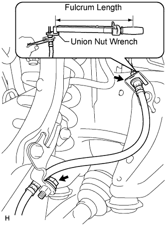
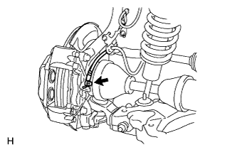

FRONT BRAKE FLEXIBLE HOSE > INSTALLATION |
| 1. INSTALL FRONT FLEXIBLE HOSE |
 |
Install a new clip to the flexible hose.
Using a union nut wrench, connect the flexible hose to the brake tube while holding the flexible hose with a wrench.
Install the bolt.
 |
Install a new gasket and connect the flexible hose with the union bolt.
| 2. FILL RESERVOIR WITH BRAKE FLUID |
| 3. BLEED BRAKE LINE |
Bleed air from the front brake system.
Turn the engine switch on (IG).
 |
Connect a vinyl tube to the brake caliper.
Depress the brake pedal several times, then loosen the bleeder plug with the pedal held down (procedure "A").
At the point when the fluid stops coming out, tighten the bleeder plug, then release the brake pedal (procedure "B").
Repeat procedure "A" to "B" until all the air in the fluid has been bled out.
Repeat the above procedures to bleed the other front brake line.
Bleed air from the rear brake system.
Turn the engine switch on (IG) and depress the brake pedal.
 |
Connect a vinyl tube to the brake caliper.
Loosen the bleeder plug and release air.
When the air is completely bled out of the brake fluid through the bleeder plug, tighten the bleeder plug.
Repeat the above procedures to bleed the other rear brake line.
Connect the intelligent tester.
Turn the engine switch off.
Connect the intelligent tester to the DLC3.
Turn the engine switch on (IG).
Enter the following menus: Chassis / ABS/VSC/TRC / Utility / Air Bleeding.
Bleed front right brake line.
Select "FR Line" on the intelligent tester.
With "FR Line" turned on with the intelligent tester, depress the brake pedal and hold it to bleed the front right brake line.
Repeat the step above until there are no more air bubbles in the fluid.
Bleed front left brake line.
Select "FL Line" on the intelligent tester.
With "FL Line" turned on with the intelligent tester, depress the brake pedal and hold it to bleed the front left brake line.
Repeat the step above until there are no more air bubbles in the fluid.
Bleed rear right brake line.
Select "RR Line" on the intelligent tester.
With "RR Line" turned on with the intelligent tester, bleed the left brake line.
Repeat the step above until there are no more air bubbles in the fluid.
Bleed rear left brake line.
Select "RL Line" on the intelligent tester.
With "RL Line" turned on with the intelligent tester, bleed the left brake line.
Disconnect the intelligent tester from the DLC3.
Clear the DTCs (Click here).
| 4. CHECK BRAKE FLUID LEVEL IN RESERVOIR |
 |
When inspecting or refilling with the engine switch off, depress the brake pedal 40 times or more (there will be less pedal resistance and the pedal stroke will lengthen), and then add fluid until the fluid level is at the MAX line.
| 5. INSPECT FOR BRAKE FLUID LEAK |
| 6. INSTALL FRONT WHEEL |